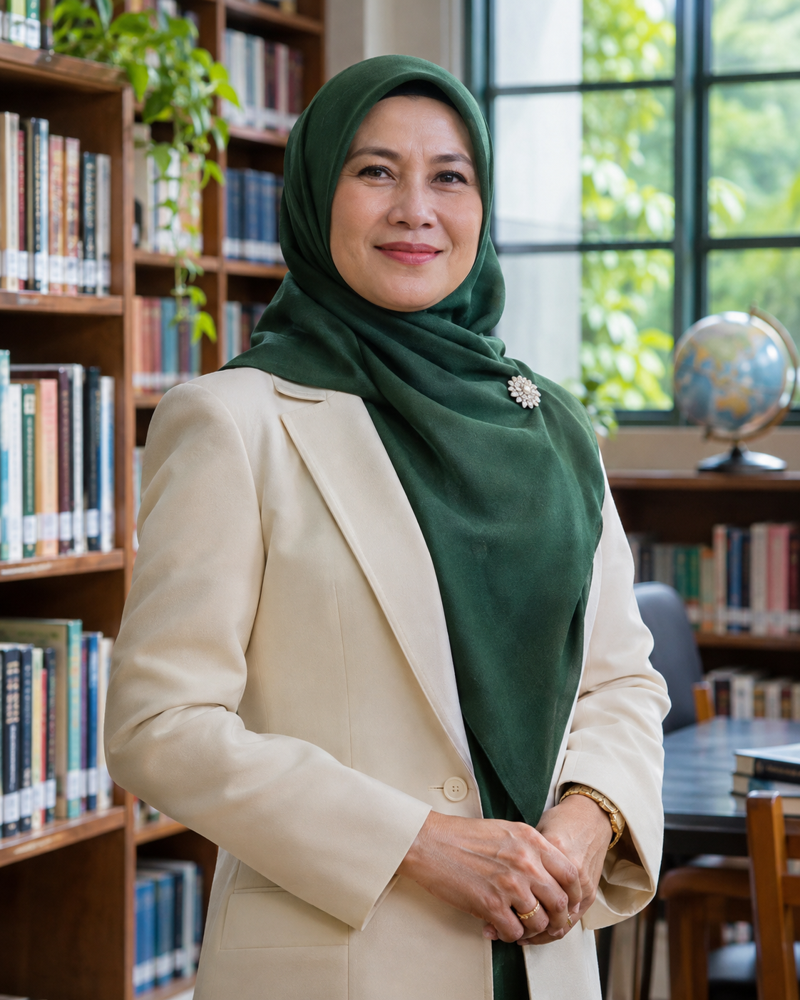
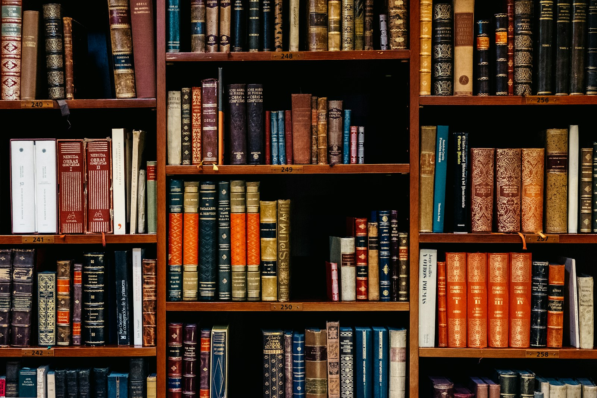

Generasi bernalar, berkarakter, dan berdampak.
Menjadi komunitas pendidikan yang memampukan setiap siswa bertumbuh utuh dan berkontribusi bagi dunia.
Identitas sekolah yang dibangun dengan semangat belajar, kepedulian, dan keberanian berkarya.
SMA Cakrawala Nusa adalah sekolah menengah yang sejak 1984 mengembangkan pengalaman belajar menyeluruh. Kami percaya keunggulan bukan hanya tentang nilai, tetapi kemampuan menggunakan pengetahuan secara bertanggung jawab.
Komunitas belajar dibangun dalam skala yang manusiawi agar setiap siswa dikenal, didengar, dan didampingi.

Perjalanan panjang yang dibangun melalui pengabdian para pendidik, dukungan keluarga, dan semangat belajar lintas generasi.
Didirikan oleh Yayasan Cakrawala Pendidikan dengan dua kelas dan semangat menghadirkan pendidikan bermutu yang berakar pada nilai kebangsaan.
Gedung belajar baru, perpustakaan, dan laboratorium sains dibuka untuk mendukung pertumbuhan jumlah siswa.
Pendekatan lintas disiplin dan program pengabdian masyarakat menjadi bagian dari pengalaman belajar.
Literasi teknologi, laboratorium komputer, dan etika digital diintegrasikan ke dalam pembelajaran.
Sekolah memperkuat jejaring alumni, kemitraan perguruan tinggi, dan pengembangan kampus hijau.
Menjadi komunitas pendidikan yang memampukan setiap siswa bertumbuh utuh dan berkontribusi bagi dunia.

“Pendidikan terbaik membekali anak untuk memahami dunia sekaligus menjaga nuraninya.”
Selama lebih dari dua dekade di bidang pendidikan, Dr. Maya berfokus pada pembelajaran yang memadukan keunggulan akademik, kesejahteraan siswa, dan kepemimpinan beretika.
Perpustakaan, laboratorium, ruang kelas, lapangan, dan aula yang mendukung pembelajaran menyeluruh.
